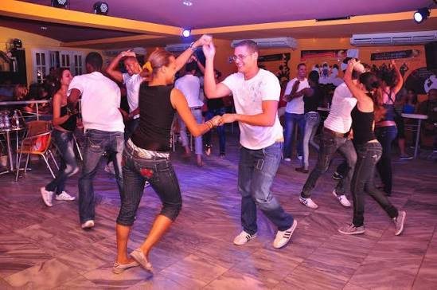
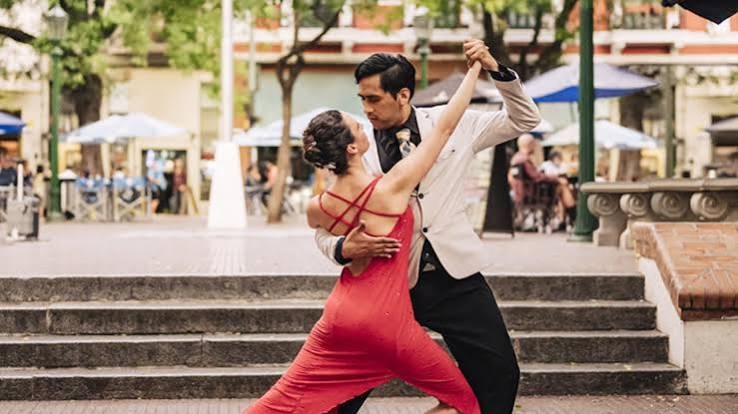
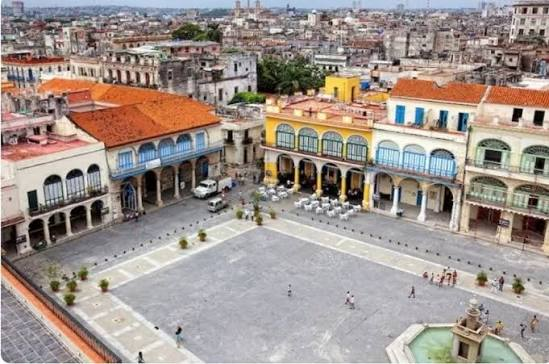
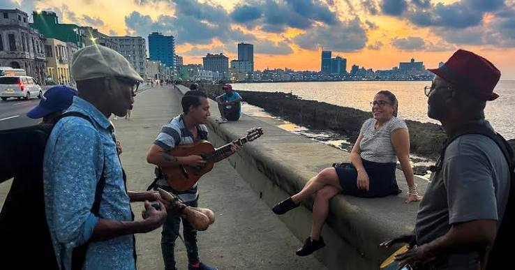
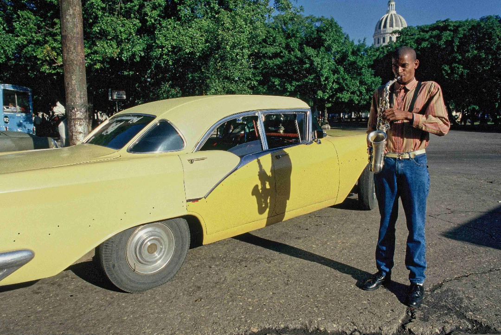
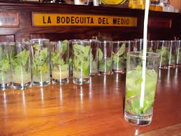

L'âme cubaine au rythme de la danse
Ce voyage explore les deux grandes danses qui vibrent à Cuba. D'un côté la salsa, explosive et joyeuse, de l'autre le tango, plus intime et mélancolique, qui a aussi trouvé sa place à La Havane. Vous alternerez cours, soirées et rencontres avec des danseurs locaux, tout en découvrant la ville et son atmosphère unique. Un séjour où le corps et l'émotion se rencontrent, entre énergie et sensibilité.
Le voyage en un coup d'œil

💃 Salsa Cubaine
- Cours avec professeurs locaux
- Casino, Rueda de Casino
- Soirées dans les clubs mythiques
- Énergie pure et joie de vivre

🎭 Tango à La Havane
- Initiation et pratique du tango
- Milongas havanaises
- Ambiance intime et mélancolique
- Rencontre avec la scène tango locale

🏛️ La Vieille Havane
- Patrimoine mondial UNESCO
- Ruelles pavées et places coloniales
- Capitole et Palais des Capitaines
- Architecture historique

🌊 Le Malecón
- 8 km de front de mer
- Ambiance nocturne unique
- Rencontres et musique de rue
- Couchers de soleil légendaires

🎵 Musiciens & Danseurs
- Rencontres avec les artistes locaux
- Échanges culturels authentiques
- Jam sessions improvisées
- Immersion dans la scène artistique

🍹 Gastronomie & Cocktails
- Mojitos et Daïquiris authentiques
- Paladares (restaurants privés)
- Cuisine cubaine traditionnelle
- Ambiance festive des bars musicaux
L'énergie de la Salsa
La salsa cubaine, ou Casino, est bien plus qu'une danse : c'est une fête permanente, un langage corporel joyeux et contagieux qui anime les rues de La Havane.
Votre itinéraire jour par jour
Immersion dansante à La Havane
Arrivée & Immersion Malecón
Accueil à l'aéroport José Martí. Installation dans votre casa particular ou hôtel au cœur de La Havane. Première balade sur le Malecón au coucher du soleil pour s'imprégner de l'atmosphère unique de la ville.
Vieille Havane & Cours de Salsa
Matinée : visite guidée de la Vieille Havane (Plaza de Armas, Capitole). Après-midi : premier cours de salsa cubaine (Casino) avec un professeur local. Soirée : observation d'une soirée salsa dans un club emblématique.
Tango à La Havane
Découverte de l'autre facette dansante de Cuba. Initiation au tango argentin adapté au contexte cubain. Rencontre avec des danseurs de tango locaux. Soirée : milonga intime dans le quartier du Vedado.
Le Vedado & Soirée Salsa
Matinée libre pour explorer le quartier bohème du Vedado, ses musées et ses cafés. Après-midi : cours de Rueda de Casino (salsa en groupe). Soirée : grande soirée salsa avec les locaux.
Journée culturelle & Libre
Visite au choix : Finca Vigía (maison d'Hemingway), Musée de la Révolution ou Fábrica de Arte Cubano (FAC). Temps libre pour pratiquer, flâner ou simplement écouter la musique de rue.
Masterclass & Soirée de clôture
Matin : masterclass avancée (salsa ou tango selon votre choix). Après-midi : préparation de la soirée de clôture. Soirée : dîner dans un paladar suivi d'une dernière grande soirée dansante.
Départ
Petit-déjeuner cubain. Transfert à l'aéroport José Martí. Vol retour avec la musique de Cuba dans la tête et des pas de danse plein les jambes.
L'intimité du Tango à Cuba
Surprenant mais bien réel, le tango a trouvé à La Havane un terreau fertile. Entre mélancolie et passion, découvrez une scène tango authentique et méconnue.
Formules & Organisation
🎒 Formule Autonomie
- Hébergement (casa particular ou hôtel)
- Pass pour les cours de danse
- Entrées aux clubs et soirées
- Road-book détaillé des lieux de danse
- Assistance à distance 24h/24
✨ Formule Sérénité
- Tout le programme Autonomie
- Guide francophone VPDVOYAGES
- Accompagnement aux soirées dansantes
- Mise en relation privilégiée avec les artistes
- Transferts privés inclus
🛂 Formalités
- Passeport : Valable 6 mois après retour
- Carte de tourisme : Visa obligatoire
- D'Viajeros : Formulaire numérique avant arrivée
- Assurance santé : Obligatoire (155 000 €)
💵 Sur place
- Monnaie : Pesos cubains (CUP)
- Change : En banque ou Cadeca (jamais à l'aéroport)
- Paladar : 10-35 € · Cocktail : ~4 €
- Prises : Américaines 110V/220V
Votre itinéraire sur la carte
Les lieux emblématiques de votre séjour dansant à La Havane : cliquez sur chaque point doré pour découvrir les étapes.
¡Azúcar! Bon séjour dansant à Cuba !
Salsa · Tango · La Havane · Deux danses, une même passion
Parlons de votre projet →